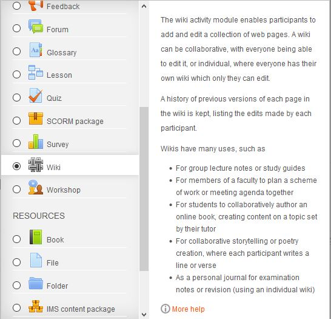
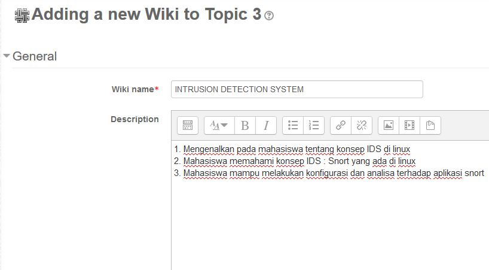
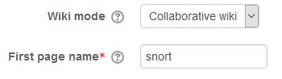
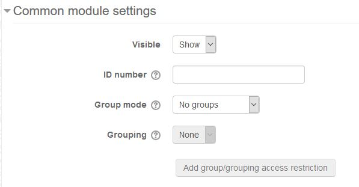
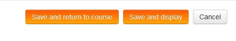
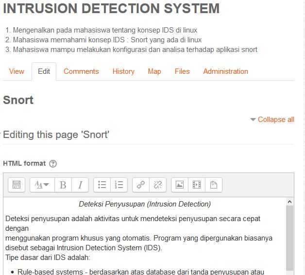

Moodle WIKI
Tutorial membuat activity wiki di moodle
Membuat Moodle Wiki
1. Klik add new activity or resources dan pilih “wiki”

2. Tulis nama wiki
3. Tuliskan ringkasan (deskripsi) wiki yang akan dibuat

4. Pilih mode wiki, hanya guru, grup, atau untuk setiap murid memiliki wiki yang
bisa diedit bersama guru.
5. Tentukan nama halaman pertama wiki jika berbeda dengan nama wiki, serta isi inisial

6. Pilih pilihan kategori grup dan grading jika ada

7. Setelah itu Pilih ”save and display”

8. Setelah selesai, maka wiki anda siap untuk diisi dengan informasi yang bisa dibuat
sendiri dengan teks anda. Wiki juga memungkinkan untuk membuat tautan, dan halaman
wiki yang bisa ditandai dengan tanda [ ]

info
Nama: Pramadhana Cahaya Kurnia
Nim: 1112045
Email : Viper.alpa911@gmail.com